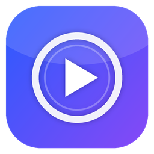

OpenMP
Odtwarzacz muzyki i wideo dla Windows 10 i 11.
Muzyka
- wyświetlacz z okładką, parametrami i dużym licznikiem
- słupki, widmo, oscyloskop i VU na żywo
- taśma utworu w czterech stylach
- teksty z .lrc, tagów i LRCLIB
Dźwięk
- przejścia bez przerw i przenikanie
- korektor 18-pasmowy z presetami
- ReplayGain z ogranicznikiem
- szybkość i wysokość dźwięku
Wideo
- mały panel, który sam się chowa
- dekodowanie sprzętowe, napisy, ścieżki, rozdziały
- wznawianie i zrzuty klatek
Biblioteka
- osobno muzyka i wideo
- dyski sieciowe: UNC i zmapowane
- statystyki, ulubione, historia
Widoki
- pełne okno z listami i biblioteką
- kompaktowy z analizatorem
- miniodtwarzacz na wierzchu
Windows
- klawisze multimedialne i nakładka systemowa
- skojarzenia plików, jedna instancja
- samoaktualizacja